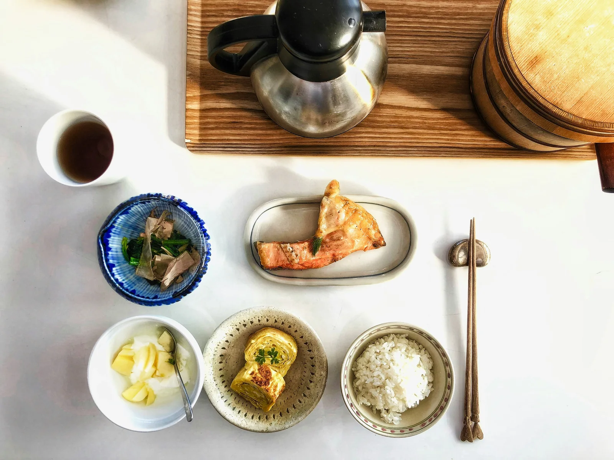
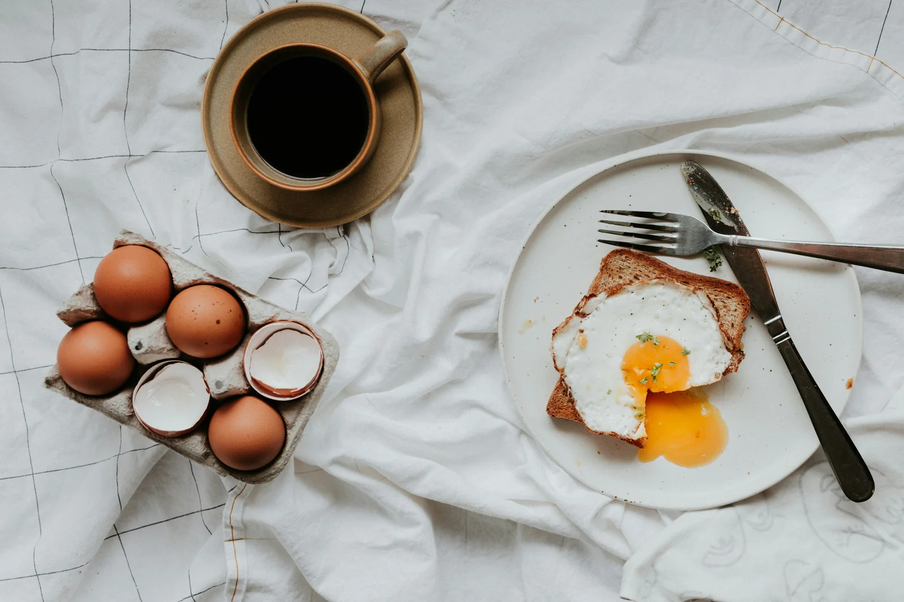

Y'all are sleeping on Otto Dix. Dix flies under the radar. His work visualizes the cultural, political tensions of the 21st century in a prescient and evergreen way.

Although I was never drawn to Abstract Expressionism, I always loved Kirchner's work. His Berlin series? A marvel.

Breakfast is my favorite meal of the day. Ever since I've experienced a Japanese-style breakfast, I'm afraid the expectations have become too high.
I hack together various recipes, but here's one of my favorite Instagram chefs whose meals warm my heart.

That being said, I've enjoyed breakfast in every country I've visited. Every country's breakfast is fantastic.
I love eggs! Why are they so expensive? Please buy me eggs.

Long live Wong Kar-wai— particularly his chef-d'œuvre (IMHO). There's more to Hong Kong cinema than "In the Mood for Love," I promise. He's a real one.

There are TV shows, and then there are historically devastating stories of brutal yet time-honored conformity, transformed into a postmodern medium. Shogun is one of them, and you'll never forget it.